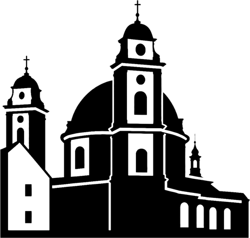

ZA JAROMĚŘICE
PRO VŠECHNY GENERACE
Jsme sdružení nezávislých kandidátů ZA JAROMĚŘICE a kandidujeme do zastupitelstva města Jaroměřice nad Rokytnou. Do letošních voleb přinášíme pokračování naší vize rozvoje města. A to ve prospěch všech generací našich občanů.